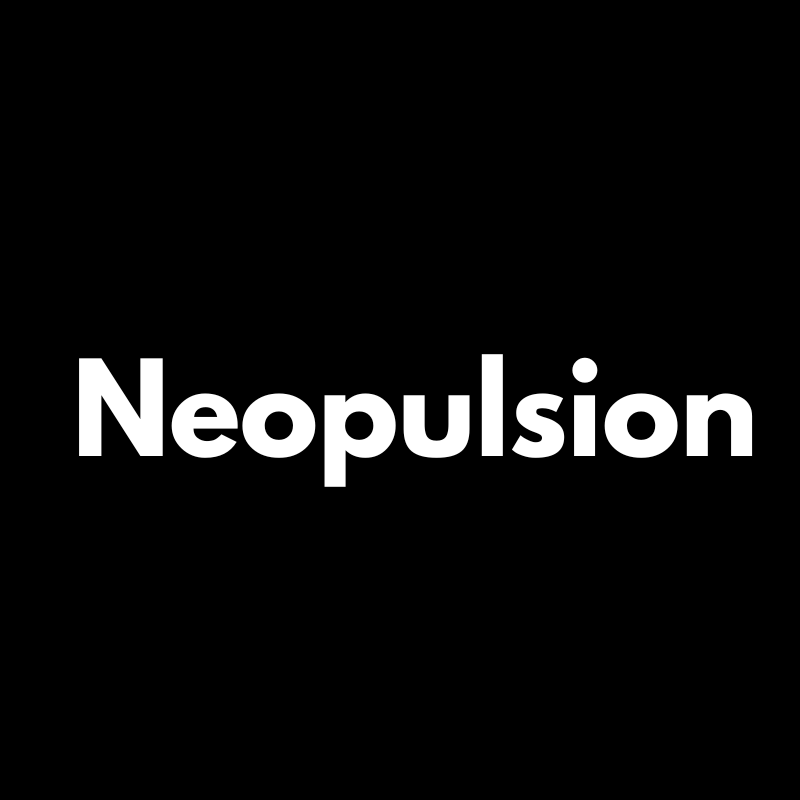

Disponible
Youssef Jlidi · Fondateur
6 membres. Un seul appel pour démarrer.
Youssef répond, les agents se mettent en route. Pas de brief perdu, pas de délai d'onboarding — l'équipe est opérationnelle dès le lendemain.
Qui sommes-nous
Neopulsion, c'est l'expertise humaine de Youssef Jlidi — et un réseau d'agents IA spécialisés qui travaillent en parallèle. Le meilleur des deux mondes, au service de votre visibilité.
L'équipe
Un expert humain qui orchestre, cinq agents spécialisés par domaine qui exécutent. Aucun intermédiaire, aucun junior — que de l'expertise, humaine ou artificielle.

10 ans de SEO, pionnier du GEO en France. Il définit la stratégie, orchestre les agents, valide chaque livrable et est votre seul interlocuteur du début à la fin.
Spécialisé dans l'audit technique, le suivi de positions et la détection d'opportunités SEO. Actif en continu, il surveille et signale chaque anomalie.
Surveille en temps réel la présence des marques dans ChatGPT, Perplexity, Gemini et Google AI Overviews. Détecte les opportunités de citation et benchmark la concurrence.
Rédige, optimise et structure le contenu éditorial — articles de blog, pages piliers, cocons sémantiques, métas. Toujours relu et validé par Youssef avant livraison.
Analyse les tendances LinkedIn, identifie les formats et sujets porteurs, rédige des posts et surveille les performances éditoriales pour maximiser la portée organique.
Conçoit et exécute les pipelines d'automatisation — génération de rapports, chaînes de traitement de données, agents métier sur mesure et orchestration multi-outils.